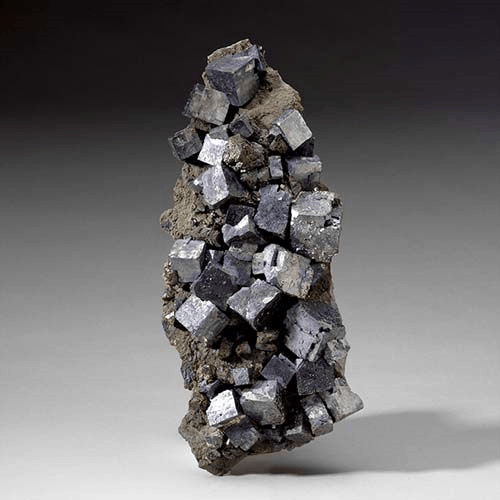
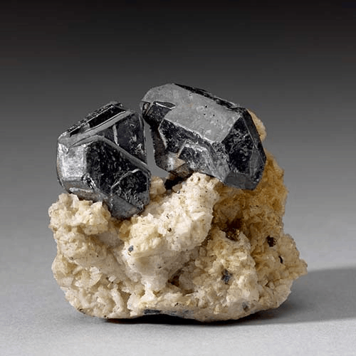
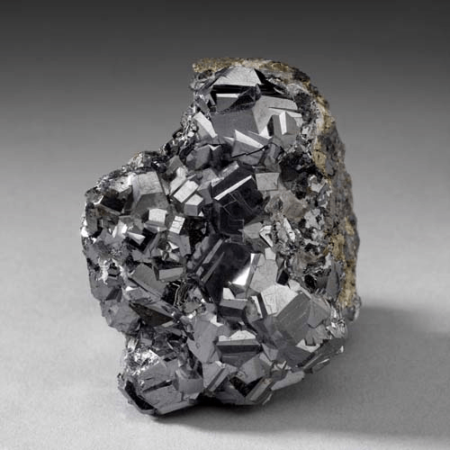

Galena - PbS
Sulfides




Habit: Most commonly cubic, more rarely cubo-octahedral or octahedral. May be tabular, also forms reticulated masses and skeletal crystals. As cleavable masses, coarse to very fine granular; fibrous, plumose. Lead-gray. Opaque; Metallic Luster.
Environment: In many different types of environments. In Hydrothermal veins, formed under a wide range of temperatures; in contact metamorphic deposits; limestones and dolostones are common host rocks.
Etymology: Name from the Latin word for lead ore or dross from melted lead